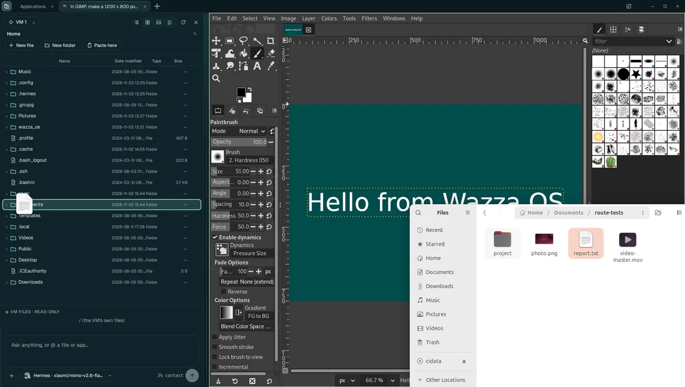
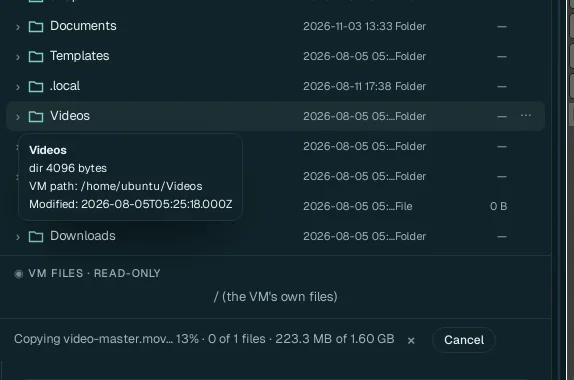
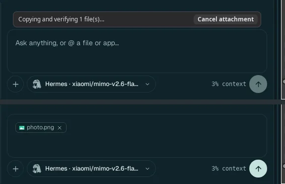
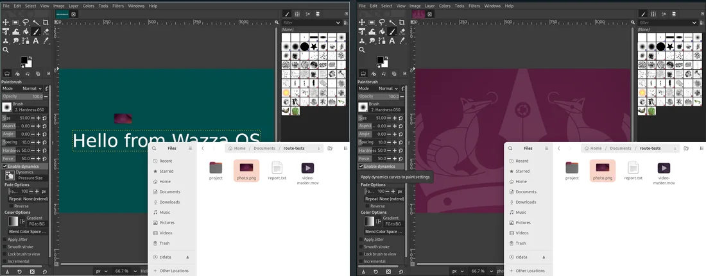
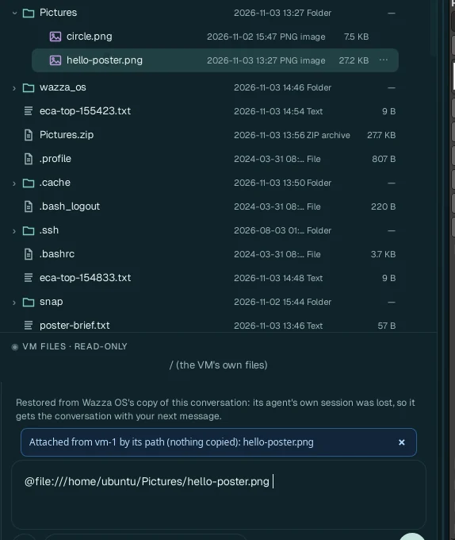
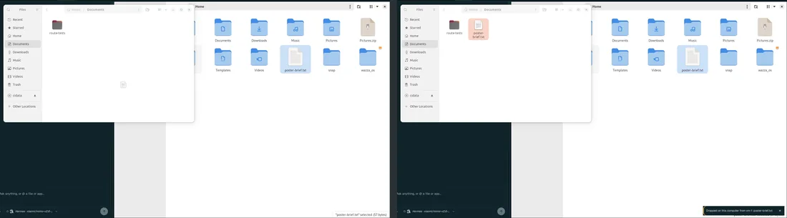
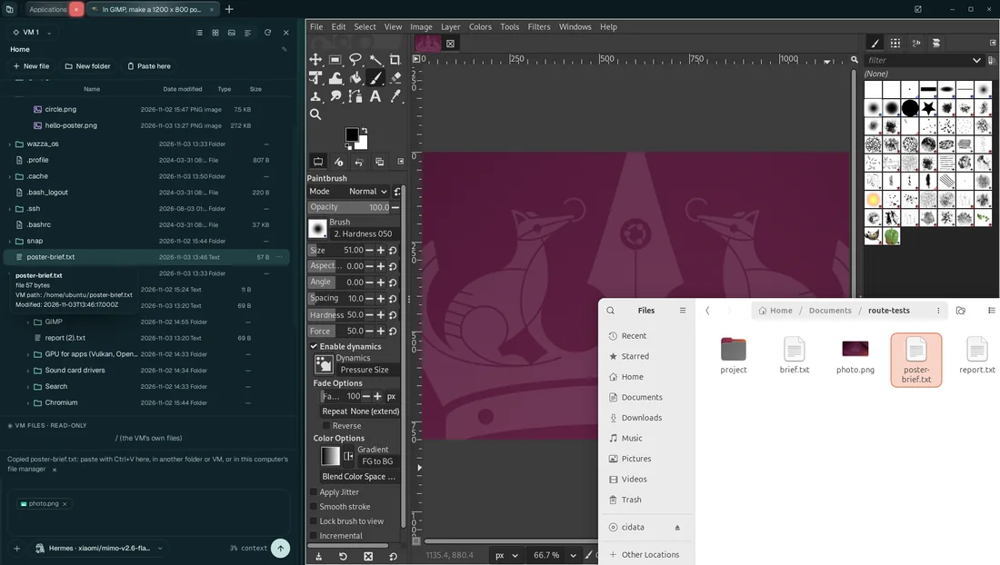
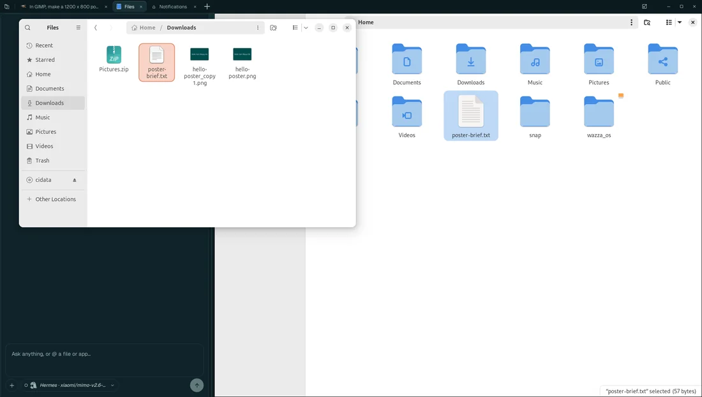
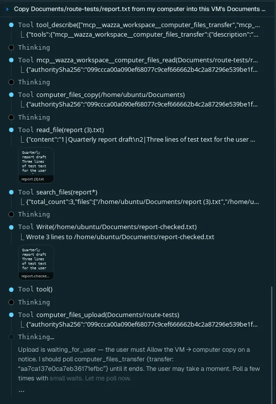
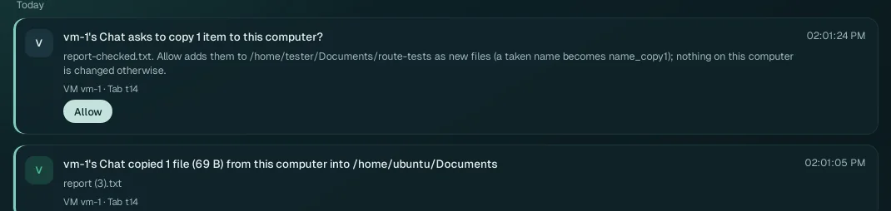

Move files between your computer, the VMs and Chats
Your computer and each VM have their own files. You move them by hand (drag and drop, copy and paste, the Explorer) or you ask an agent. Wazza OS only reads your files, and on your computer it only ever adds new files: it never writes over one of yours.
Where files live (the VM's home, its wazza_os folder, company folders) and the Explorer itself:
Files and sharing.
Which way#
On vm-2 and later VMs, copying files with Ctrl+C / Ctrl+V between this computer and the VM, or dropping files onto the VM's window, does not work yet (it works on vm-1), and nothing says so. Ask a Chat to copy them, or attach them from the Explorer.
| You want to… | Do this | It lands in |
|---|---|---|
| put files of your computer into a VM | drag them onto a folder of the Explorer, or copy them in your file manager and Paste here in the Explorer | that folder |
| give a file of your computer to an agent | drop it on the Chat, or + › From this computer… | your message, as an attachment |
| give a VM file to an agent | drag it from the Explorer onto the Chat, or type @ in the message box and pick it | your message: for Hermes by its path in the VM (nothing is copied); dragged on another agent's Chat, as a copy attached to it |
| open a file of your computer in an app of the VM | drop it on the app's window | the VM's Downloads, and the app opens it |
| get a VM file on your computer | in the Explorer, right-click it › Copy, then paste in your file manager; or › Download to this computer; or drag it out of the app's window | where you paste or drop; your Downloads |
| copy between two VMs | the Explorer's Copy, then Paste here in the other VM's Explorer | the folder you paste in |
| let an agent do it | ask a VM tab's Chat: "copy Documents/report.pdf from my computer into the VM", "put render.png on my computer" | the VM's Downloads or the folder you name; your
Downloads/From the VM or the folder you name |
Drag and drop#
Onto a folder of the Explorer#

Open the Explorer: the button at the far left of the tab strip. It shows the VM of the tab you are on.
Drag files or folders from your file manager onto a folder of the Explorer: the folder lights up.
Let go. The line under the list follows the copy, with Cancel, then says where the files went: Dropped into /home/ubuntu/Documents: report.txt.

- A name already there: the new file is
report (2).txt, thenreport (3).txt… Nothing in the VM is overwritten. - Size: no limit; only the free space of the VM's disk counts. Folders come with everything in them.
- No question: your own drop is your consent, whatever the file-copy settings say. Your files are only read.
Onto a Chat#

Drop files from your file manager onto a Chat. The message box says Copying and verifying 1 file(s)… (with Cancel attachment), then shows each file above your text. They go with your next message. + › From this computer… does the same with your computer's file chooser.
- The agent gets its own copy in the VM (in the VM's
wazza_os/chatfolder). Your file is only read. - 8 files at a time: the message box names the others; drop them again.
- A folder is not attached: it is copied into the VM's
Downloads, and the message box says where. Ask the agent to look there. - Size: no limit but the VM's free disk (Wazza OS keeps 256 MB of it free).
- On the Computer Control Chat, a drop puts the files' paths in your message: it reads them where they are, on your computer.
Onto an app's window#

Drag files from your file manager onto an app in a tab and let go where the app should take them. Wazza OS copies them into the VM, then drops them into the app at that spot, as a drop inside the VM would: GIMP opens a picture, a text editor opens a text. A notice follows the copy (Copying the dropped files into vm-1: 37%), then says Dropped into vm-1: photo.png. The app received them (they are in vm-1's Downloads).
- Where they are: in the VM's
Downloads. Dropped on the VM's desktop: on itsDesktop. Dropped on a folder of the VM's own Files app: in that folder. - When the window under the pointer takes no drop, the files stay in the VM's
Downloadsand the notice says so.
From the Explorer onto a Chat#

Drag files or folders of a VM from the Explorer onto the Chat of a tab on that same VM, or copy them in the Explorer (right-click › Copy) and paste them in the message box. What the Chat gets depends on where its agent runs (The agents):
- Hermes runs in the VM: the files are attached by their path in the VM. The message box gets
@file:///home/ubuntu/Documents/report.txt(a folder's path ends with/) and says Attached from vm-1 by its path (nothing copied): report.txt. Nothing is copied: the agent reads the file where it is. - Prime Agent, Claude Code, Codex and Antigravity run on your computer and cannot open a path in the VM: each file is copied into the Chat and attached to your message, as a file of your computer is. The message box says Attached from the Explorer: report.txt. A folder is not attached to these Chats: drag its files.
+ › From the VM's files… opens the Explorer on the Chat's VM for this, and typing @ picks a file by its path (Mention a file or an app).
- 8 at a time, like a drop of your own files.
- A file of another VM is not attached: the message box says so. Copy it into this Chat's VM first (the Explorer's Copy, then Paste here in one of its folders).
- On the Computer Control Chat, a VM's files are not on your computer: download them or copy them to This computer in the Explorer first.
- Files of This computer in the Explorer drop on a VM's Chat as your own files do (above).
Out of a VM, onto your computer#

Drag files in an app of the VM (its Files app, for instance) out of the VM's picture, and let go on a folder of your file manager or on your desktop. Wazza OS copies them out of the VM while you drag (Copying the dragged files from vm-1: 40%), and the app you let go on takes them (Dropped on this computer from vm-1: …).
- Let go where nothing takes files: they are put on your clipboard (On the clipboard: … Nothing took the drop there. Paste with Ctrl+V in Files.). Paste them in any folder.
- Back on the same VM's picture, the drop is refused: the files are already there.
- With From a VM to this computer set to Off, drags out are refused.
- A row of the Explorer, a VM's or this computer's, dragged onto your file manager lands there too (a VM file is copied out of its VM when you let go).
Copy and paste#
With the Explorer#

Right-click a file or folder in the Explorer › Copy. A VM file is first saved on your computer (Copying poster-brief.txt… saving 1 files), then the line says Copied poster-brief.txt: paste with Ctrl+V here, in another folder or VM, or in this computer's file manager.
Paste: Ctrl+V in a folder of your file manager (the file lands where you paste), or Paste here in the Explorer, in another folder, another VM or This computer. In the message box of a Chat on the same VM, the paste attaches it as a drag does: by its path for Hermes, as a copy for the other agents (above).
The other way works too: copy files in your file manager, then Paste here in the Explorer (into the selected folder, else the folder shown). These are your own copies: no question, no size limit, new names only.
With the VM's Files app#

- Out of the VM: copy files in the VM's Files (Ctrl+C). Wazza OS copies them out at once and puts them on your computer's clipboard: Ready to paste on this computer: poster-brief.txt. Paste them (Ctrl+V) in any folder of your file manager: they land where you paste. Your own copy asks nothing; with From a VM to this computer set to Off, nothing is copied.
- Into the VM: copy files in your file manager, then paste them in a folder of the VM's Files. They are copied when you paste: Pasted in vm-1: 1 file (28 KB). This follows From this computer to a VM: Allow (the default) copies at once, Ask shows a question at the paste (Paste 1 item from this computer in vm-1?, with Allow), Off copies no files.
- No limit of size or number: only the free disk where the files land counts.
- Copied text goes both ways in every case.
The Explorer's Download#
Right-click a VM file or folder in the Explorer › Download to this computer (in an opened folder's list the item reads Download):
- It is copied into your
Downloadsfolder, whatever its size; a folder stays a folder. The line says Downloading hello-poster.png to Downloads…, then Downloaded to Downloads: hello-poster.png. A second download of it ishello-poster_copy1.png. - A file of 16 KB or less opens your computer's Save dialog instead: you choose its name and folder, and the line says Saved poster-brief.txt · 57 bytes.
- Download zip makes one
.zipin yourDownloads: a folder's zip (Pictures.zip) holds the folder with everything in it.
Names, sizes and progress#
- Into a VM, a name already taken gives
report (2).txt,report (3).txt… - On your computer, it gives
report_copy1.txt,report_copy2.txt… Wazza OS never writes over, deletes or renames a file of yours. - Size: your own copies (drops, drags out, the Explorer, copy and paste with the VM's apps) have no limit but the free disk where the files land, checked before the copy starts. An agent's copy takes 1 to 64 files or folders at a time, up to 4 GB, 4,096 files and folders and 32 levels of folders.
- Progress: the Explorer's line (with Cancel), a notice for drops on an app's window, drags out and copies through the clipboard, and the message box for a Chat's attachments.
- Your files are only read. Links are never followed, and agents leave hidden files (names starting with a dot) out.
What the file-copy settings cover#
Settings › Files & sharing › Between this computer and VMs has one setting each way: Ask, Allow or Off. From this computer to a VM is Allow by default, From a VM to this computer is Ask.
| How the files move | What the setting does |
|---|---|
| Your own drag and drop; the Explorer's Copy, Paste and Download | Nothing to allow: your gesture is the consent. Off (from a VM) still stops drags out of a VM's window. |
| Copy in the VM's apps, paste on your computer | No question (your own copy). Off: nothing is copied. |
| Copy on your computer, paste in the VM's apps | Allow: copied at the paste. Ask: a question at the paste, with Allow. Off: no files (text still is). |
| An agent's copy, either way | Allow: at once. Ask: a question with Allow; after 2 minutes without it, nothing is copied. Off: refused, and the agent tells you. With the defaults: into a VM at once, to your computer after your Allow. |
An agent's copy between two VMs (vm_copy) | The stricter of the two settings it crosses: Off on either refuses it, Ask on either asks. |
| An agent's copy from a VM you are not viewing | The same rules, if Chats in VMs you are not viewing can copy files is on (the default); off, only the Chats of the VM you are viewing copy files. |
A question appears as a notice at the bottom right of the window and waits in Home › Notifications (Needs you), with its Allow, until it expires.
Agents#
A Chat in a VM tab#
The agent of a tab's Chat works in its VM's files directly: its commands and apps read and write them. For your computer's files (below your home folder) it has these tools:
| Tool | What it does |
|---|---|
computer.files.search | Finds files of your computer by name, below your home (hidden ones only when asked, never keys, keyrings or browser profiles). |
computer.files.read | Reads one file below your home, up to 256 KB per read. |
computer.files.copy | Copies 1 to 64 files or folders of your computer into its VM (its
~/Downloads, or the folder named). A taken name becomes report (2).txt. |
computer.files.upload | Copies 1 to 64 VM files or folders to your computer (your
Downloads/From the VM, or a folder below your home), as new files only. |
computer.files.replace | Replaces a file on your computer with a VM file, only a file Wazza OS itself made there (an upload) that nobody changed since; never one of yours. |
computer.files.transfer | How far a copy, upload, replace or VM copy went: waiting for your Allow, running, done or failed. |
computer.files.vm_copy | Copies 1 to 64 files or folders of its VM
into another VM of this computer (to: vm-2…; that VM's ~/Downloads, or a folder
of its home), as new files only (a taken name becomes report (2).txt; names that start with a dot are left
out). It follows the stricter of your two file-copy settings it crosses: Off on either refuses
it, Ask on either waits for your Allow (on the notice of the VM it goes
to), both Allow run it. |
The Chats of a VM you are not viewing copy files too, by the same rules (Chats in VMs you are not viewing can copy files, on by default); searching and reading your computer's files stays with the Chats of the VM you are viewing.
An example, on a VM tab's Chat with MiMo: "Copy Documents/route-tests/report.txt from my computer into this VM's Documents folder. Then make report-checked.txt from it in the VM, with a last line: Checked in the VM. Then put report-checked.txt on my computer."


The copy into the VM ran at once (vm-1's Chat copied 1 file (69 B) from this computer into
/home/ubuntu/Documents); the upload waited for Allow, then
report-checked.txt was in the folder on the computer, and the agent read it back.
The Computer Control Chat#
The Computer Control Chat runs on your computer, not in a VM: it lists,
searches, reads and opens your files (below your home). It also has the copy tools of a VM tab's Chat (above),
naming the VM each time (vm:
vm-1 to vm-8): computer.files.copy into that VM,
computer.files.upload and computer.files.replace from it, computer.files.vm_copy
from it into another VM, and computer.files.transfer. They follow the same file-copy settings.
Agents outside Wazza OS#
An agent connected through wazza-os mcp moves
files with the explorer tool, the same commands as the command
line below:
| Verb | What it does |
|---|---|
copy_to_vm | Files of your computer into a VM (default ~/Downloads), by the
file-copy setting: {"verb":"copy_to_vm","paths":["~/report.pdf"],"vm":"vm-1","folder":"~/Documents"} |
upload | VM files to your computer, as new files (default Downloads/From the VM),
by the file-copy setting: {"verb":"upload","vm_paths":["~/Pictures/poster.png"]} |
copies | How far a copy_to_vm or upload went:
{"verb":"copies","id":"…"} |
transfer | A copy as your own Paste (any size) between your computer and a VM, or two VMs,
into a folder: {"verb":"transfer","from":"host","to":"vm-1","folder":"~/Documents","paths":["~/a.pdf"]} |
clipboard_copy, clipboard_paste | Files put on, and pasted from, the file clipboard, as a file manager's Copy and Paste |
import, stage | One file of your computer into the VM's ~/Downloads;
one VM file copied into Wazza OS's share to read it on your computer |
From the command line#
$ wazza --gui explorer copy-to-vm ~/Documents/brief.txt --vm vm-1 --folder /home/ubuntu
$ wazza --gui explorer upload Pictures/hello-poster.png --vm vm-1
$ wazza --gui explorer transfer --from vm-1 --to host --folder ~/Documents Pictures/hello-poster.png
$ wazza --gui clipboard filesclipboard files prints the two file-copy settings and the copies waiting for your Allow. Every
subcommand: The command line › Files.